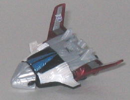
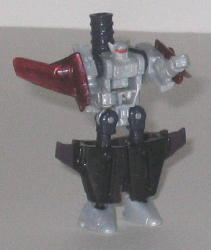
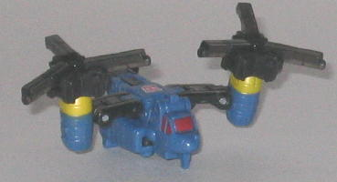
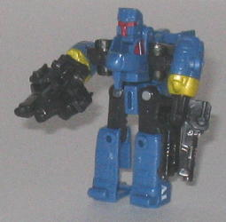

Ramjet
vs. Scythe
Ramjet
vs. Scythe
Size
: Mini-Con (2-pack)
Overall Rating
: 7.9
 Ramjet
Ramjet


Allegiance
: Decepticon, Minicon
Difficulty of Transformation
: Easy
Color Scheme
: Light milky gray,
charcoal black, shiny sparkly violet-red, and some red, silver, shiny off-white,
and metallic moderately light blue
Individual Rating
: 7.9
(NOTE: Because this toy is a repaint, this
is not a full-blown review. This mainly covers any changes made to the
toy and the color scheme, and merely compares it to Energon Skyboom. For
a review on the mold itself, read the review of Energon Skyboom
here
.)
Ramjet has a very nice,
eye-catching color scheme overall, especially in vehicle mode. The interplay
of the black and light gray would be rather boring without all those nice
secondary colors to spice it up, and these accents do so quite nicely.
The shiny violet-red wings with their silver stripes look especially good,
though the blue paint apps near the front part of the vehicle mode look
nice as well. Those blue paint apps should have continued to the very front
of the plane, however, since it looks rather odd to have the middle portion
completely painted and then have the front tip completely devoid of any
such paint. The robot mode also looks decidedly more plain than the vehicle
mode, since the only paint app visible from a front view in that mode is
the red visor on the face-- a more even distribution of paint apps really
would have helped, methinks.
No mold changes have
been made to Ramjet, but he does have a new Decepticon emblem tampoed on
his right wing.
Ramjet Bio
:
One of the very few Mini-Con robots
capable of long-distance spaceflight, Ramjet was recruited early on by
Thrust. Relatively unarmed, he's more of a conman than a warrior; before
Thurst began his rebellion against the Mini-Con Council of Sages he offered
bargain tours of the Mini-Con colonies on the moons of Cybertron, often
leaving tourists stranded in remote areas. Now, he charges extraordinary
fees to robots desperate to escape the black hole only to dump them on
the Terrorcon infested surface of Cybertron, or worse, into the black hole
itself!
Strength: 6.0
Intelligence: 7.0
Speed: 9.0
Endurance: 9.0
Rank: 5.0
Courage: 4.0
Fireblast: 6.0
Skill: 9.5
 Scythe
Scythe


Allegiance
: Autobot, Minicon
Difficulty of Transformation
: Easy
Color Scheme
: Charcoal black, dull
blue, transparent black, and some red, dull yellow, and white
Individual Rating
: 7.8
(NOTE: Because this toy is a repaint, this
is not a full-blown review. This mainly covers any changes made to the
toy and the color scheme, and merely compares it to the original Armada
Makeshift. For a review on the mold itself, read the review of the original
Armada Makeshift
here
.)
Scythe has a pretty appropriate
color scheme for a SWAT Rescue helicopter, with the blue and black going
together fairly well. I don't think the transparent black looks very good,
however, the solid black looks better. The yellow stripes under the propellers
help to add some contrast, but a few more paint apps besides just the (tacky)
windows and "SWAT A1" tampo on the side of the helicopter would have been
appreciated. Still, overall the colors go together pretty well, so I have
no major complaints there.
No mold changes have
been made to Scythe (so he still does have a weapon mode, of course-- pictures
of it just weren't taken to save webspace), though he does have a new Autobot
symbol on the top of the main body of his vehicle mode.
Scythe Bio
:
Unlike his friend Anti-Blaze, Scythe
is a born fighter. A mobile and heavily armed brawler ready for a battle
at a moment's notice, he never backs down, even from overwhelming odds.
Scythe has known the freshman politician since before the Mini-Con robots
first fled Cybertron for Earth millions of years ago. Now the two, together
with Checkpoint, are brothers-in-arms in the fight against Thrust and his
evil Mini-Con rebels.
Strength: 6.5
Intelligence: 8.5
Speed: 7.0
Endurance: 9.0
Rank: 5.0
Courage: 8.5
Fireblast: 8.0
Skill: 7.5
Overall, Ramjet vs. Scythe
is my personal favorite of the Wave 3 Minicon Battle Packs-- both are good
Minicon molds with good paint jobs, though Scythe could have used more
paint apps and Ramjet could have used his paint apps divided more evenly
between both modes. Recommended if you like Minicons.
Review by Beastbot
Back to Transformers:
Cybertron Index